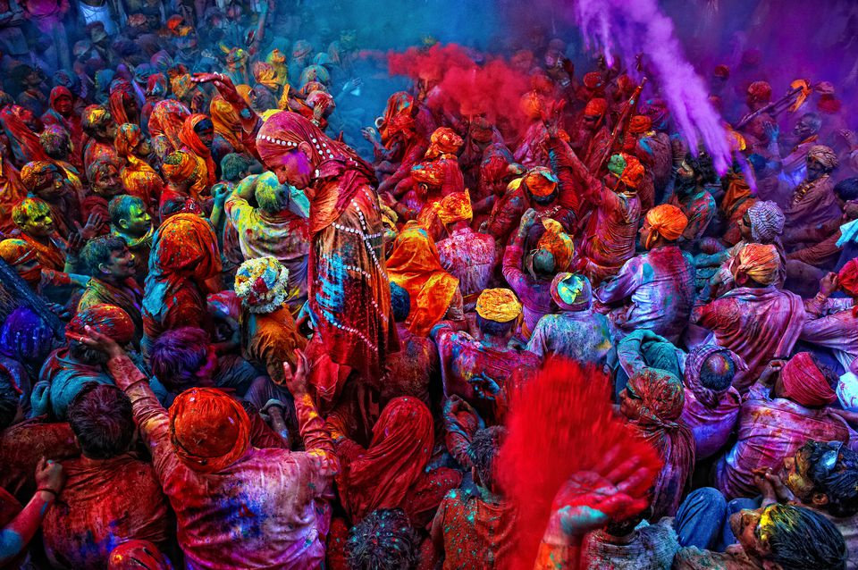
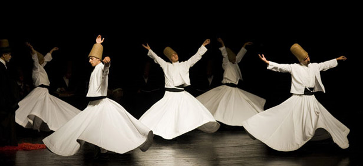
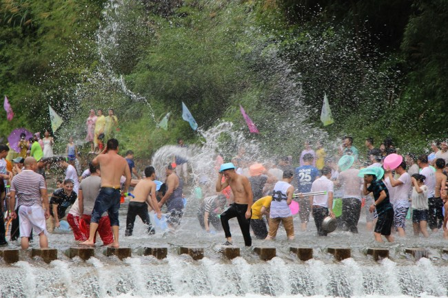

1. Holi, the festival of colors
India, 13 March
The festival of Holi marks the beginning of spring and the triumph of good over evil in Hindu mythology. It is the time to end conflicts, to revive love and a good reason for Hindus all over the country and abroad to celebrate in a mass party that stars with the burning of the demon Holika and continues with rituals (puja), family visits, delicious food, sometimes bhang and, above all, large vibrant street gatherings where nobody can escape clouds of rainbow-colored powder and water thrown at each other, a tradition believed to have been started by Lord Krishna, who loved to play pranks as a young boy. The festival is celebrated across India, but the best-known hubs are probably the temple towns of Mathura and Vrindavan, not far away from the capital.
Tips: It may seem obvious, but it’s always worth reminding to wear clothes that you will happily discard and protecting mouth and eyes from the powder. Also, watching out for large crowds as the local party mood may get a bit overwhelming for foreign visitors.
- see more
2. Mevlana Festival (Mevlana Anma Torenleri)
Turkey, 10-17 December
The festival of the swirling dervishes commemorates the death of the 13th century Sufi poet Rumi, known as Mevlana to his followers. Every 17th of December in the Anatolian city of Konya, the Mevlevi brotherhood worships the saint on the date known as his “wedding night” with Allah. With their long robes and tall hats, the dervishes whirl receiving the blessings of heaven and bringing them down to earth in a ceremony of dance and spiritual performance. More than a million people attend yearly this ten day festival of devotion, listed amongst UNESCO Masterpieces of the Oral and Intangible Heritage of Humanity and one of the very good reasons to travel to Central Anatolia even in the cold winter time.
Prices: 50TL (20$ approx.)
Tips: There are plenty of activities and celebrations during the festival days. It is important to book tickets and accommodation well in advance.
- see more
3. Songkran Water Festival
Thailand, 13-15 April
Songkran is the New Year celebration in Thailand and many South East Asian countries. With traditional Buddhist roots, it is the time of the year when Thais honour their families and elders, onto whose palms young people pour fragrant water during Rod Nam Dum Hua ritual on the first day of Songkran. It is also the time of spring-cleaning and it is believed that splashing water symbolically cleans the misfortunes of the year gone by. Traditionally Thais would pour a bowl over family members, but as the festive spirit took over the celebration, buckets and hoses were brought into the party that has grown into the largest water fight known. This is a nationwide party but Chiang Mai is one of the most popular hubs amongst travellers to enjoy this water fest.
Tips: Comfortable clothes and anything you do not mind getting wet are the best dress code for this water party, but it is recommended to wear non-slippery shoes to enjoy the street party.
- see more
4. Naadam Festival
Mongolia, 11-13 July

Naadam Festival is the Mongolian celebration of its nomadic culture and a reminder of the country’s independence in 1921. With its origin in the wedding and hunting celebrations of the Mongol Army, it has now become an extraordinary display of sports and tradition. The Naadam Stadium holds an elaborate Opening Ceremony followed by two days of horse racing, wrestling and archery competitions and performance, while a whole folkloric festival unfolds in its surroundings with crafts, music, food and locals in a party mood, all good reasons to visit Ulaanbaatar on a journey across the Mongolian desert and steppe.
Price: 10 – 25$
Tips: You are likely to spend long hours under the sun, appropriate clothing and protection is more than recommended.
- see more
5. Winter light festival
Japan, (November – March)

Winter illuminations are a growing event in different cities of Japan, but probably one of the most famous takes place in the Nabano No Sato Park in Kunawa, home to extensive cherry trees and flower gardens that feature over the winter months an elegant installation of over seven million LED lights creating formidable shapes and designs. Every year the decoration revolves around a particular theme and has previously featured the well- known tunnel of light or a beautiful illuminated version of Mout Fuji amongst other impressive displays. This long-term festival is a spectacle that will surely add magic to any winter journey to Japan. The park is open throughout the year, but the winter illuminations run from mid-November to mid-March.
Tips: The park is open 9am – 9pm. It is a popular destination, so one should get ready to share the space with large crowds. Remember it is winter and outdoors so wrap up in warm clothes to enjoy the evening.
- see more